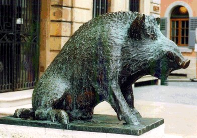
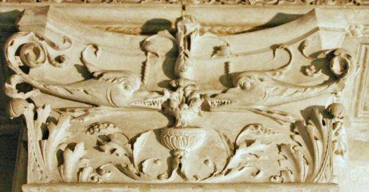
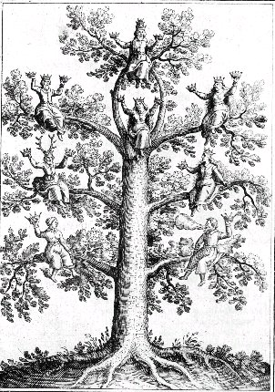
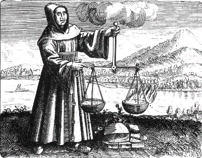
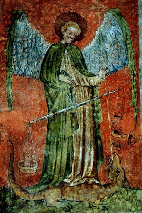
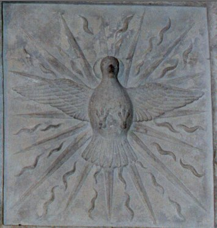

Emblema XLI.
revu et corrigé le 6 février 2003
Adonis ab apro occiditur, cui Venus accurrens tinxit Rosas sanguine.
(Adonis est tué par un sanglier : Vénus accourt vers lui et teint les roses de sang1.)

De son père, Myrrha mit au monde Adonis,
Bien-aimé de Cypris : un sanglier l’accable.
Vénus court : un rosier blesse sa belle jambe ;
La rose blanche alors de ce sang devient rouge.
Les Syriens, l’univers pleurent avec la déesse.
Sous de douces laitues [ euphorbes] elle place le mort2.
Nous avons suffisamment exposé et réfuté ailleurs la façon particulièrement impropre dont certains mythologues expliquent l’allégorie d’Adonis, tantôt en rapprochant ce personnage du soleil et le sanglier qui le fit périr de l’hiver piquant, tantôt en le rapportant aux semences des céréales, qui demeurent six mois sous la terre chez Proserpine et un temps égal chez Vénus. Nous proclamons ici avec l’unanimité des auteurs que sous Adonis on entend le soleil philosophique. D’où ces petits vers :
Et tout n’est qu’une même chose,
Dionysos, Soleil, Adonis.
Et Orphée :
Toi qui jouis de noms divers. Adonis,
Père des germes, et à la fois garçon et jeune fille.Tout cela ne doit s’entendre en aucune manière du soleil céleste, mais du soleil philosophique3. Celui-ci en effet exprime l’un et l’autre sexe, mais non celui-là. Ainsi ils attribuent à Dionysos et au soleil les même propriétés qu’à Adonis et inversement, de même qu’à Osiris. Adonis est tué par un sanglier, c’est-à-dire par le vinaigre très aigre ou eau dissolvante dont les dents féroces et foudroyantes enserrent Adonis4. Le soleil philosophique est en effet blessé à mort par ce sanglier, il se résout et se divise en morceaux. Mais Vénus s’efforce de porter secours a son amant et, comme il était mort, elle le plaça et le garda au milieu de laitues [euphorbes ]. Osiris est de même tué par Typhon, et il est coupé en divers morceaux qu’Isis, épouse d’Osiris, recueille et ensevelit après les avoir rassemblés5. Le même deuil qui en Egypte suivait la mort d'Osiris suivait celle d’Adonis en Syrie et dans les royaumes voisins. Là où l’on entendait pendant plusieurs jours des lamentations et des gémissements survenaient ensuite des manifestations de joie et des danses, parce que, pensait-on, celui qui avait été mort était de nouveau en vie et transporté au ciel. C’est de là que naquit la vanité de leur religion ou superstition païenne qui connut un immense développement, le diable lui en fournissant l’occasion et lui procurant de faux miracles.
Cet Adonis naquit (suivant la Fable) de Cinyras, roi de Chypre, et de sa fille Myrrha, inceste criminel si l’on considère l’histoire, et si l’on regarde l’allégorie, acte non illicite mais des plus nécessaires. Car rien ne s’accomplit dans cet art si l’on n’opère la conjonction de la mère et du fils, ou celle du père et de la fille, et s’il n’en résulte une naissance. Ici en effet plus les conjoints sont proches par le sang, au premier ou au second degré de consanguinité, et plus ils sont féconds, tandis qu’à l’inverse, plus ils sont éloignés et plus ils sont inféconds, ce qui est inacceptable appliqué au mariage humain. C’est pourquoi Œdipe épouse sa mère, Jupiter sa sœur, et de même Osiris, Saturne, le soleil, le serviteur rouge, Gabritius6. Dans la métaphore de Belin que cite le Rosaire, le soleil parle d’Adonis (c’est-à-dire de lui-même) de la manière suivante :
" Sachez que mon père le soleil m’a donné autorité sur toute puissance et m’a revêtu d’un vêtement de gloire. "7
Et peu après :
" Car je suis unique et semblable à mon père etc. J’extrais mes serviteurs de leur possibilité et de leur nature et je les revêts dans toutes leurs œuvres de ma splendeur et de ma belle lumière que mon père m’a données. Car je suis excellent, j’exalte toutes choses et je les abaisse, et aucun de mes serviteurs n’a de pouvoir sur moi sauf un à qui cela est donné parce qu’il m’est contraire. Et celui-là me détruit, mais il ne détruit pas ma nature. Et celui-là est Saturne qui sépare tous mes membres. Après cela je vais à ma mère qui rassemble tous mes membres divisés et séparés. Je suis celui qui illumine tout ce qui est à moi, et je fais apparaître en chemin à découvert la lumière de mon père Saturne, et aussi de ma mère qui se montre mon ennemie. "8
Ces paroles sont si claires que, même si quelqu’un n’est que médiocrement versé dans la lecture des auteurs, elles peuvent écarter les ténèbres des yeux de son esprit et manifester la lumière solaire qui est abondamment perçue dans les concordances présentées entre les réalités et les personnages. En effet les notions véritables, bien que recouvertes du voile de l’allégorie, s’accordent entre elles en un concert admirable, les notions fausses se combattent elles-mêmes et entre elles, et partent dans des directions diverses9.
Notes1. Cette fable a déjà été évoquée ailleurs. Voici l'article que consacre Pernety à Adonis :
Adonis. La Fable nous rapporte qu’Adonis fut aimé de Vénus; qu’il fut tué à la chasse par un sanglier furieux, et que Vénus en étant informée, accourut à lui pour le secourir; elle rencontra dans son chemin un rosier à fleurs blanches, aux épines duquel s’étant piqué le pied, il en sortit du sang qui changea en rouge la couleur blanche des fleurs. Les Syriens adoraient particulièrement Adonis, comme les Égyptiens Apis; l’un et l’autre signifiaient la matière Philosophique, qui aimée de Vénus, c’est-à-dire de la Lune Philosophique, se réunissent ensemble et se prêtent un secours mutuel. Isis et Osiris étaient le mari et la femme, le frère et la sœur, le fils et la mère; et les deux histoires sont tout à fait semblables. Un sanglier tue Adonis, Venus y court; Typhon tue Osiris, Isis y accourt : celle-ci ramasse les membres dispersés d’Osiris; Vénus cache Adonis blessé sous une laitue. Tout cela représente allégoriquement ce qui se passe dans le vase Philosophique, comme le savent les Adeptes. Voyez l’explication de cette fiction dans les Fables Égyptiennes et Grecques dévoilées, T. 2.Plusieurs points doivent être analysés dans cette fable. Adonis [AdwniV] est conçu de Myrrha et sorti d'un arbre à myrrhe, après la métamorphose maternelle. Adonis fut recueilli pour sa beauté par Aphrodite qui devra disputer son bienaimé à Perséphone et le lui céder périodiquement. Jeune chasseur, il tombera sous les coups d'un sanglier [Arès en toute hypothèse] mais reviendra à la lumière comme il sied à un dieu de la végétation. Tristesse de ce deuil et joie du retour se succèdent dans la fête des Adonies où des vases garnis de plantes semées hors saison, forcées et vite flétries, les « jardinets d'Adonis » [khpoV] symbolisaient sa brève existence et désignaient proverbialement tout plaisir illusoire ou fugace. Venu d'Asie où un fleuve éponyme semblait se teindre de son sang au jour où on pleurait sa mort, on l'a assimilé au Tammuz babylonien, l'amant d'Astarté en qui les Grecs reconnaissaient Aphrodite. Le sens de cette légende est assurément l'image de la végétation qui descend au royaume des morts rejoindre Coré - Perséphone en hiver et revient sur terre au printemps s'unir à l'amour pour s'épanouir et fructifier en été. Toutefois, plutôt que le royaume d'Hadès, il nous semble que c'est celui de Pluton sous sa forme grécisée [Ploutos] qu'Adonis rejoint, dans cette éclipse de lune et de soleil qui représente la phase de putréfaction initiale, quand les éléments sont mis au creuset. Par ailleurs Adonis symbolise une fleur : l'anémone, première et éphémère fleur du printemps [anemwnh]. Cette anémone est indissociable du vent [elle s'ouvre au moindre vent] : nous avons déjà rencontré ce symbolisme s'exprimant dans l'une des figures du Livre d'Abraham Juif. Mais le sens en est un peu différent, puisque dans un cas [celui qu'on a vu dans l'Atalanta, XXXIV] la direction va dans le sens de la conjonction [la fleur est au sommet d'une montagne] alors qu'ici, c'est la descente dans un royaume sombre où le mystère règne, qui domine. Le rôle que joue ici Vénus - Aphrodite l'apparente à Lucifer, puisque nous sommes à l'Orient de l'oeuvre.

FIGURE I
(Porrentruy, Suisse - le sanglier de Calydon ; cliché Alain Mauranne)
2. Le père d'Adonis, Cinyras [KinuraV] donne l'explication de cette fable. Il est roi de l'île de Chypre et grand prêtre d'Aphrodite. Or, Chypre a toujours été liée au cuivre, au vitriol bleu, au vert-de-gris, et de façon plus générale à l'airain. C'est, justement, le sens de cet emblème XLI : la mise en présence des deux principes, dont l'un accuse une origine chthonienne [Aphrodite], tandis que l'autre est d'origine métallique. On dit d'ailleurs parfois, que Cinyras est fils d'Apollon. La naissance d'Adonis n'est pas claire et elle pourrait être d'origine incestueuse, habitude que les alchimistes ont de nommer et de décrire leurs substances [habitude que doit réprouver , bien évidemment, la raison et la morale]. L'allégorie décrite par l'emblème XLI peut s'interpréter ainsi : le Soufre, incarné par Adonis, est dissous par le principe pontique du Mercure [incarné par Arès, travesti en sanglier]. Aphrodite est l'autre partie du dissolvant [il s'agit de sa base] qui permet au Soufre, dans un temps ultérieur de réapparaître. Il ne s'agit que d'une conjecture. De fait, elle permet d'établir un parallèle entre les pleurs de la déesse, des Syriens et les larmes que versent les mères des métaux, dans l'allégorie du massacre des innocents, du livre d'Abraham Juif. Les Syriens, habitants d'Asie Mineure, sont proches du Pont-Euxin, c'est-à-dire de la mer Noire, hiéroglyphe de la putréfaction initiale. On aurait donc tort de voir les deux Soufres en Aphrodite et Adonis ; le sens à donner à la scène est plus complexe. Que dire du chien, par exemple, qui accompagne le sanglier ? Que dire du guerrier en arrière plan ? Cette scène pourrait bien se rapporter à Hécate [cf. Atalanta XXXVIII] dont on sait que l'animal fétiche est le chien. Et nous avons vu dans l'Atalanta, XXVII, que le culte d'Hécate était en rapport avec Lucifer : dès lors, il ne faut pas s'étonner que l'euphorbe [la laitue] soit évoquée à cette époque où les roses blanches se transforment en roses rouges. L'euphorbe [eujorbion] a cette qualité d'être une plante grasse, caractère fondamental pour tout ce qui est de l'ordre de la croissance de la Pierre, pendant la Grande Coction. On peut ainsi rapprocher l'euphorbe du mot pâture [eujorbia] et jouer sur le mot mhlon [mouton, pomme d'or], afin de désigner le terreau [ou la pâture] dont l'embryon a besoin pour exprimer la quintessence dont il est porteur. Enfin, on pourrait évoquer Euphorbe, qui fut l'un des plus courageux guerriers parmi les Troyens [dont on a montré ailleurs qu'ils symbolisent la partie minérale de l'oeuvre, cf. Atalanta XXXV et XXXVI]. Il porta, notamment, le premier coup contre Patrocle, qui fut achevé par Hector. Tué par Ménélas, qui dédia son bouclier à Héra, Euphorbe se réincarna : quelques siècles plus tard, Pythagire illustrait ses idées de métempsychose et les réincarnations successives...Patrocle - littéralement qui s'occupe de son père, MenoitiadeV - se rattache à l'âme métallique par la racine menoV [âme, principe de vie], en bon accord avec ce que nous avons dit, touchant au symbolisme des Achéens et des Troyens, dans le magistère.
3. Allusion au rôle des planètes et des signes du zodiaque dans l'ordre des opérations. Rappelons que tout ce qui a trait aux astres, touchant à l'alchimie, doit être compris par cabale [cf. humide radical métallique]. Voyez l'article du Dictionnaire de Pernety :Soleil. La grande divinité des Egyptiens, des Phéniciens, des Atlantes, etc.; fut honoré sous divers noms chez les différentes Nations. On le confondit presque partout avec Apollon, et on lui donnait la même généalogie. [...] . Chez les Chymistes le Soleil est l'or vulgaire. Les Philosophes appellent soleil leur soufre, leur or. Le Soleil des Sages de source mercurielle, est la partie fixe de la matière du Grand Œuvre, et la Lune est le volatil ; ce sont les deux dragons de Flamel. Ils appellent encore Soleil le feu inné dans la matière. Comme le volatil et le fixe sont tirés de la même source mercurielle, les Philosophes disent que le Soleil est le père, et la Lune la mère de la pierre des Sages. Quelquefois ils l'entendent à la lettre quand ils parlent de la matière éloignée de l'œuvre, parce qu'il s'agit alors de cette vapeur que le Soleil et la Lune célestes semblent former dans l'air, d'où elle est portée dans les entrailles de la terre pour y former la semence des métaux, qui est la propre matière du Grand Œuvre. Les Adeptes ont donné par similitude et par allégorie les noms d'arbre solaire et d'arbre lunaire au soufre rouge, et au soufre blanc qu'ils font pour parvenir à la perfection de leur poudre de projection. [...]Quant au Soufre philosophique, il s'agit de celui qui est sublimé [dissous] dans le Mercure, qui va se conjuguer avec l'autre principe [le Corps de la Pierre ou Soufre blanc] ; l'époque de la conjonction sembla marquée par des irisations rappelant les couleurs e la queue d'un paon, ou encore par des filaments blanchâtres, mais nous ne saurions trop recommander à l'étudiant qu'il prête attention que les auteurs n'ont jamais donné des détails exacts, touchant à leurs matières. Sur le Soufre, Pernety a écrit que :[...] Lorsque les Philosophes parlent de leur soufre, il ne faut pas s'imaginer qu'ils parlent du soufre commun dont on fait la poudre à canon et les allumettes, ni aucun autre soufre séparé et distinct de leur mercure. Quoiqu'ils disent qu'il faut prendre un soufre, un sel et un mercure, ces trois choses se trouvent à la vérité dans leur matière, mais elles n'y sont pas sensiblement distinctes. Leur soufre est artificiel, leur mercure l'est aussi, et l'art manifeste leur sel. Mais tout cela ne fait qu'une chose qui les renferme toutes trois.Tout cela est parfaitement dit et exprime la vérité de la complexité à comprendre qu'une seule matière peut en cacher trois.
4. Il nous faut donc chercher les lieux de chute et surtout, d'exil, pour ce Soleil philosophique. Nous avons déjà parlé du lieu d'exil, localisé dans le Verseau [Atalanta, XL]. Nous ne saurions parler ici du Lion vert ni, a fortiori du Lion rouge, qui manifestent un stade plus tardif de la coction hermétique. Ce qui veut dire que le signe du Lion - domicile du soleil - semble hors d'oeuvre dans ce chapitre. Seul le signe de la Balance, lieu de chute du Soleil, se signale à notre attention. Si l'on ajoute que Saturne est exalté dans la Balance, on comprend davantage l'intérêt de du signe.
La Balance est, par tradition, un signe d'AIR. Nous avons fait voir ailleurs les raisons qui en faisaient un signe d'EAU. La Balance est le domicile diurne de Vénus, le lieu d'exaltation de Saturne, le lieu d'exil de Mars et celui de la chute du soleil.

FIGURE II
(chapelle de l'Hôtel Lallemant, Bourges - cliché Alain Mauranne)La figure II montre la Balance, telle qu'elle se présente dans l'oeuvre. Elle se compose, comme une balance ordinaire, d'un fléau, traversée perpendiculairment à sa longueur, par trois prismes d'acier, les couteaux. L'arête du couteau central repose sur un plan d'agate ou d'acier, disposé à la partie supérieure d'une colonne verticale. Les deux autres couteaux sont accrochés sur deux plateaux dans lesquels on dispose les substances à peser. La colonne, dans le cas qui nous occupe, est le vase de nature, que l'on distingue bien et qui est identique au vase en marbre de Carrare que décrit Cyliani, en son Hermès Dévoilé. Les figures gnomides représentent les deux natures métalliques, considérées sous l'angle de leur poids.
- le premier décan montre les deux plateaux d'une balance pour rappeler qu'à l'équinoxe d'automne, les jours sont égaux aux nuits - c'est du moins ce que rapportent les astronomes et même, certains astrologues. Mais ces plateaux, tenus par une main ferme, qui s'élève au-dessus de la matière doivent nous faire penser que la Justice [cf. Gardes du corps], l'Equité et le Droit ne sont pas de vains mots. Ce décan est donc celui de l'équilibre et de la mesure, il donne l'égalité de l'âme [comprenez qu'il dissout le Soufre de façon homogène]. Il dispose à la bonne humeur [au sens d'une harmonie entre l'âme et l'esprit]. En somme, il élève l'esprit vers ce qui est beau et noble [le Soufre spritualisé]. C'est un décan dans lequel l'Artiste doit savoir ce qu'il fait, du mieux qu'il peut, le Providence faisant le reste, au grès des vents, marées et tempêtes toujours possibles. Nous avons déjà parlé de Thémis, déesse de la Justice, qui tient dans une main, le glaive de la Justice, c'est-à-dire un glaive de feu, et dans l'autre main, la balance des poids de l'oeuvre.
La Balance [Libra, zugon, staqmoV] se prête de manière remarquable aux règles de la cabale. En latin, on aura garde d'oublier les euphonismes entre libra, liber [partie vivante de l'écorce, feuillets d'un livre]. En grec, zugon est riche d'occurrences familières aux Adeptes : il s'agit du moyen qui sert à joindre deux objets ensemble. Ainsi, du joug pour deux boeufs ou pour deux chevaux, sans lesquels la course d'un char n'est pas possible [la rotation de la roue qui détermine le temps dans les époques du 3ème oeuvre]. C'est aussi le fléau d'une balance. C'est encore un objet dual qui évoque le couple ou la paire. La Balance est donc un signe mutable, dual, qui explique son association avec les Gémeaux et le Verseau. L'autre acception, staqmoV donne ceci : un lieu d'équilibre, où l'on s'arrête. Par exemple, une étable où couchent les animaux [c'est dans une étable, la crèche, que naît le Christ, épithète du BasileuV de l'oeuvre]. C'est dans une écurie, aussi, que l'on capte l'un des sels qui permettra la préparation du Mercure, dont le but ultime est bien la fixation des Soufres. Songez encore aux bâtiments d'une métairie qu'il faut établir solidement, à chaux et à sable, afin de pourvoir au mieux à la subsistance du bétail [melon : mouton, mais aussi...pomme d'or du Jardin des Hespérides].
- le deuxième décan : l'image représente un de ces vieux chercheurs Amoureux de science qui se penche sur quelque ancien manuscrit ou sur un incunable dont il veut extraire la sève et le suc bienfaisant à l'aide des clefs de son savoir. Dans sa chevelure en bataille, se fuidifient les fleurs de l'esprit et les plus pures conceptions de la spiritualité triomphante. Ce décan est donc celui de l'Art sacré, dans le sens d'un éclairage qui fait découvrir les mystères. Il permet à l'Esprit de se détacher de la matière. Il est un facteur d'intelligence et de compréhension du Tout [en to pan]. Il apporte, au vrai, l'étincelle qui réchauffe, l'aiguillon qui permet l'animation du Mercure, c'est-à-dire qui permet de trouver, dans le labyrinthe de Salomon, la chambre centrale grâce au fil d'Ariane. Partant, ce même fil permettrea à l'Artiste, ultérieurement, de pouvoir sortir de la chambre centrale, comme nous l'avons écrit dans la section du Mercure. Le premier décan nous donnait le mode d'emploi du Mercure ; le second nous fait accéder au but de l'opération, muni des indispensables celfs de l'oeuvre, les clefs de Saint-Pierre. Quant au livre sur lequel se penche l'Artiste, tout laisse à penser qu'il s'agit de l'un des très rares exemplaires du Livre d'Abraham Juif, qui se compose de feuilles d'or, dont la trame semble faite de tendres arbrisseaux [il s'agit d'une allégorie sur les cendres des végétaux] : autrement dit, l'Artiste considère sa terre feuillée ou terre des feuilles.
- le troisième décan : l'image montre un arbre vigoureux porteur de nombreux fruits d'or, symbole du travail équilibré sur la matière, qui représente l'arbre solaire. Plus loin, l'épi blond des blès lourdement chargé des grains dorés rappelle l'éternelle renaissance des bienfaits de la féconde nature. Ce décan est gage de la promesse acquise par le travail sur le Mercure assisté de l'art de l'alchimiste.

FIGURE III
(Anatomia Auri, Mylius, Francfort, 1628)Nous avons eu l'occasion de voir cet arbre à de multiples reprises, notamment dans Fontenay. On trouvera cet arbre dans la Philosophia reformata, de Mylius.
Au total, la Balance s'avère constituer là encore un signe composite et complexe : le symbolisme qui s'en dégage est de l'ordre de la pondération et de la mesure des principes élémentaires de l'oeuvre. Du bon équilibre de ces forces dépend l'égalité de la coction dans le temps où le volatil et le fixe vont s'équilibrer. A ce point central, à égale distance duquel s'égalisent les deux plateaux de la roue [le feu de roue] et du frein [lupus], de l'élan [sublimation] et de la retenue [fixation], ce sont les natures contraires que l'on voit se neutraliser. Ce milieu aqueux [aérien dans sa formulation traditionnelle] de la Balance est le lieu de la préparation du Mercure des Sages, au lieu que le signe des Gémeaux [Atalanta, XXXVIII] est celui de son animation. La Balance, associée à l'épée, exprime la Justice [Thémis, QemiV] autant que la Vérité. Son rôle consiste donc à jauger non seulement le poids des natures, mais encore celui du feu, suffisamment perceptible - dans la figure I - par l'expression carnassière de nos plateaux idéalisés. Il est relativement facile de comprendre que l'on ne saurait faire un distinguo accusé entre les natures métalliques et leur solvant, puisqu'il s'agit du vase de nature ou, comme Albert Le Grand le nomme, le Composé du Composé. Or, le dissolvant est un véritable solvant pour les chaux métalliques qu'il transforme en teintures et qu'il dévore littéralement, à la manière des dents aiguisées d'un loup. C'est la raison pour laquelle l'antimoine a paru, longtemps et même encore actuellement pour de nombreux alchimistes, comme le glaive de feu qui pouvait réaliser la séparation des matières en leur principe humide et leur principe sec. Mais, nos alchimistes n'ont peut-être pas pris suffisamment garde que le mot antimoine était truffé de cabale et que sous le terme d'antimonium [albastrum, larbason], était voilé l'expression anqos monoV : la seule étoile. Aussi bien, la Balance voile-t-elle aussi, cette opération qui consiste à construire les fondements de l'oeuvre [qemelioV], à régler, en somme, la position des astres [promoteurs des métaux] à l'époque du début [qema] de la coction. Définie parfois comme une divinité qui jouit du don de prophétie, on ne peut mieux définir le sens hermétique de la Balance, qu'en l'associant à QemiV. Mais il faut ajouter la Vérité [alhqeia] à la Justice. C'est qu'en effet, l'une ne peut aller sans l'autre : la racine, alh, exprime une idée de course errante [le Mercure est souvent comparé à un vagabond, un filou, un voleur, toutes étiquettes de sa forme de Mercure commun, qu'il s'agit de faire filer doux]. C'est l'opération de l'animation du Mercure, réalisée dans le signe des Gémeaux, qui détermine ce imposé aux natures métalliques [le joug est cette pièce qui constitue la tige du caducée d'Hermès] et qui fait voir en quoi le droit est associé à la justice. Nous parlions tout à l'heure de Saturne, en évoquant que cette planète était en exaltation dans le signe. C'est que la notion de destin entraînant celle de temps vécu [le calvaire subi par les métaux, portés au creuset], on conçoit sans peine que Cronos, Juge et exécuteur, mesure la vie du métal et tienne en balance Achille [l'Achéen] et Hector [le Troyen]. Si l'on tient compte du fait, déjà vu, que l'on peut assimiler le principe mercuriel [salin] à Hector et le principe métallique [la chaux du métal] à Achille, on ne sera pas étonné outre mesure de lire dans l'Iliade, sur le combat des deux héros :
« Les voici qui reviennent aux fontaines pour la quatrième fois. Cette fois, le Père des Dieux déploie sa balance d'or ; il y place les deux déesses du trépas douloureux, celle d'Achille, celle d'Hector, le dompteur de cavales ; puis, la prenant par le milieu, il la soulève, et c'est le jour fatal d'Hector qui, par son poids, l'emporte et disparaît dans l'Hadès. Alors Phoebos Apollon l'abandonne » [Iliade, 22, 208-213]
Cette scène tragique est visible sur l'une des gravures d'un autre traité attribué à Michel Maier, le Symbola Aureae Mensae, datant de 1617. Notez qu'un vase grec représente Hermès, pesant les âmes d'Achille et de Patrocle [cf. supra]

FIGURE IV
(Symbola Aureae Mensae, Maier)Cet ouvrage, qui passe pour posthume, porte l'épigramme suivante :
Traité Posthume, ou Ulysse : c'est-à-dire Sagesse ou intelligence tel le scintillement de la béatitude céleste par laquelle si lors d'un naufrage sombrent corps et biens, lui-même arrive à bon port sain et sauf en ramant à l'aide des rames de la patience et de la méditation. Avec un appendice des textes de la Fraternité de la Rose-Croix, Francfort 1624.Or, que donne à voir la figure III ? Un clerc ; sous son bras droit, un livre comportant de nombreux feuillets, qui correspond à n'en point douter au grimoire que consulte le vieillard du second décan de la Balance. De sa main gauche, il tient le fléau de l'instrument. Dans le plateau de gauche, l'EAU. Dans celui de droite, le FEU. Par TERRE, une roche d'aspect équarrie dans laquelle on peut voir la pierre du coignet de Fulcanelli, la maîtresse pierre du coin ou de l'angle, cette pierre angulaire qu'évoque l'Adepte :« Quant à la taille de cette pierre angulaire, -nous entendons sa préparation-, on peut la voir traduite en un fort joli bas-relief de l'époque, sculpté à l'extérieur de l'édifice, sur une chapelle absidiale, du côté de la rue du Cloître-notre-Dame. » [Myst. Cath., p. 61]
Enfin, juste au-dessus du fléau, un nuage qui symbolise évidemment l'AIR. Si l'on considère notre conjecture, le Mercure se définit par le Mixte AIR + EAU ; la chaux métallique sublimée par le Mixte AIR + FEU. Le sel, par l'association TERRE + AIR. Enfin, la Pierre elle-même, par la TERRE mêlée au FEU. Nous ajouterons que l'équilibre symbolisé par la balance indique le retour à l'unité, c'est-à-dire à la « non-manifestation » : c'est nommer la putréfaction. Sur le sujet de la dissolution initiale, dont beaucoup d'étudiants croient qu'il s'agit de la première opération du magistère, alors qu'il s'agit de l'opération initiale dans le 3ème oeuvre [la Grande Coction], il nous faut évoquer le mythe de Saint-Michel, bien connu des hermétistes, souvent cité par Fulcanelli, E. Canseliet parce qu'il représente l'agent qui permet de triompher du dragon écailleux. Nous avons déjà fait voir qu'il existait plusieurs dragons dans l'oeuvre, dont le dragon babylonien [désignation du vitriol romain] et le dragon écailleux [qui s'apparente à la tortue], qui se rattache au Mercure. L'archange Saint-Michel, par son symbolisme, se rattache également à la Balance. On représente Saint-Michel de diverses manières : par exemple, dans l'église de Saint-Jean de Narosse, il tient dans sa main droite, au-dessus de sa tête, le glaive avec lequel il va terrasser le dragon. Dans sa main gauche, il tient la balance du Jugement Dernier. L’un des plateaux est accroché à la jambe de Saint-Michel et l’autre à la tête du dragon (à comparer avec le polyptyque du jugement dernier de Van Der Weyden à l’Hôtel-Dieu de Beaune). Ce thème de Saint-Michel tenant la balance du Jugement Dernier vient des Chrétiens d’Egypte, les Coptes, qui l’ont eux-mêmes très vraisemblablement emprunté aux anciens Egyptiens (pesée du cœur du défunt par Anubis, mythe qui se rattache au dosage précis des poids de nature). Quant au dragon, c'est l'animalité la plus sauvage qu'il symbolise, dans laquelle on peut retrouver une part de la signifiance hermétique du sanglier, qui culbute Adonis. Saint-Michel, en liaison avec ce dragon, qui n'est autre que le Mercure dans son premier état, sauvage et bouillonnant, représente la force de l’Esprit, par les outils qu'on lui fait tenir en main : glaive de feu et surtout la balance, qui fait le compte de la pesée des âmes [lisez les chaux métalliques]. Curieusement, ce mythe de Saint-Michel s'apparente à la statue de Saint-Marcel [cf. Cambriel] où l'on voit nettement l'évêque enfoncer sa crosse dans la gueule d'un dragon. En somme, Saint-Michel est un archange, celui qui était à la tête de l'armée de Dieu pendant la révolte de Lucifer. Cette réflexion trouve sa résonnance alchimique si l'on veut bien considérer que la planète Vénus, le matin, est surnommée Lucifer : nous avons vu que Vénus représentait, au soir de l'oeuvre, la stibine [hiéroglyphe de la TERRE]. La tradition chrétienne donna à Saint Michel plusieurs fonctions principales : se battre contre Satan, sauver les âme des croyants du pouvoir de l'Ennemi et plus spécialement à l'heure de la mort, être le champion des peuples de Dieu ; en outre, Saint Michel était le patron de l'église et des ordres de chevaleries au Moyen-âge, et enfin, à l'instar de Charon, il emmenait les âmes des morts pour leur jugement. Tout cela peut se comprendre par cabale si l'on accepte l'analogie entre le Soufre et l'âme métallique des métaux morts, passés au creuset. Le dragon pourrait symboliser - outre le vitriol romain - la terre dans laquelle se cache le métal, c'est-à-dire sa minière.

FIGURE V
(l'archange Saint Michel, terrassant le dragon, et portant la balance du jugement,
Porrentruy, Suisse - cliché alain Mauranne)Notez que, dans les Arts, Saint Michel est représenté comme un guerrier angélique, portant une armure, avec un caseque, une épée, et un bouclier sur lequel est souvent écrit: Quis ut Deus, c'est à dire « Qui est comme Dieu ». La figure V donne à voir, par conséquent, une rare version de ce guerrier qui perd toute allure martiale pour ne garder que les traits d'un pur esprit, paraissant méditer et calculer les poids, en sondant la terre [Lucifer, le dragon], muni de son long bâton qui se termine par une croix.
On le voit encore représenté :
-1° terrassant le démon ;
- 2° présentant des balances à l'enfant Jésus: dans les plateaux sont les âmes des justes ;
- 3° combattant les anges rebelles ;
- 4° debout sur un ange révolté: sur sa cuirasse sont figurés le soleil, la lune et des étoiles; sur son baudrier est représenté un Zodiaque; il tient une palme et montre dans le ciel un mot hébreu qui signifie: Quis ut Deus [cf. supra] ;
- 5° pesant les âmes coupables du sang innocent ;
- 6° apparaissant à un évêque qui reçoit de l'archange l'ordre de bâtir une église sur le mont Gargan ;
- 7° tenant à la main une sorte de labarum, comme prince de la milice céleste, ou une simple épée de chevalier, pour rappeler sa lutte avec Lucifer.L'allégorie est encore plus explicite par la parabole qui suit : sur le lieu d'origine de son culte, en Phrygie, son prestige en tant qu'ange guérisseur supplanta ses fonctions militaires. La tradition veut que Saint Michel, au début de la Chrétienté, fit jaillir une source médicinale à Chairotopa, où tous ceux qui invoquent la Sainte Trinité et Saint Michel sont guerris. Plus célèbres encore sont les sources où l'archange Michel fit tomber le rocher à Colossae. Là, les Paiens dirigèrent une rafle contre le Sanctuaire de Saint Michel et voulurent le détruire. Mais l'archange cassa un rocher en deux d'un rayon de lumière, et un cours d'eau en jaillit, ce qui sanctifia pour toujours les eaux qui descendaient dans les gorges. Il est difficile de trouver une allégorie plus belle que celle de l'archange, envoyé de Zeus, foudroyant un rocher, y insufflant le Soufre et le transformant en eau benoîte ou eau bénite des vieux alchimistes. De cette allégorie, Michael Faust a tiré l'une des plus belles représentations de la Balance, dans son Philaletha Illustrasta, le Lut de Sapience, qui constitue le frontispice de l'ouvrage.
Nous retrouvons sur cette image tous les caractères de la figure V. Glaive de feu [crosse entée], balance. Le dragon est symbolisé par le serpent Ouroboros ; l'étoile de Salomon montre les quatre éléments et les sept planètes de la tradition correspondant aux sept métaux. La gravure est à ce point importante que nous n'avons pas hésité à y revenir plusieurs fois [1, 2, 3, 4, 5, 6, 7,]
5. Dom Pernety passe pour un spécialiste de cette allégorie. Il y a consacré plusieurs chapitres du tome I des Fables Egyptiennes et Grecques [cap. I à VI]. Cet ouvrage est disponible - le tome I seulement - sur le site hermétisme et alchimie.
6. La fable d'Œdipe est admirable : elle a été exposée à l'Atalanta, XXXIX. Profitons de l'occasion qui nous est offerte de signaler aux lecteurs l'admirable opéra qui a été adapté par Georges Enesco [1881-1955] qui y travailla pendant plus de dix ans. Il forme avec Sergiu Celibidache et Iannis Xenakis le brelan Roumain de la musique moderne. Sur Gabritius [Gabricius], voyez 1, 2, 3, 4, 5, 6, 7, 8, 9, 10, 11, 12, 13. Sur le serviteur rouge, consultez 1, 2, 3,. Lisez l'article du Dictionnaire de Pernety qui complète les notes :Serviteur. Les Philosophes ont donné ce nom à leurs matières, parce qu'elles travaillent suivant leurs désirs, et qu'elles obéissent à leur volonté. Mais ils y ont communément ajouté des épithètes qui les désignent. Ainsi Serviteur fugitif veut dire le mercure volatil. Philalèthe semble l'entendre de la matière, ou de ce même mercure parvenu à la blancheur. SERVITEUR ROUGE : Matière de laquelle les Philosophes extraient leur mercure. « Se taisent ceux qui afferment autre teinture que la nôtre, non vraie, ne portant quelque profit. Et se taisent ceux qui vont disant et sermonnant autre soufre que le nôtre, qui est caché dedans la magnésie, et qui veulent tirer autre argent-vif que du serviteur rouge, et autre eau que la nôtre, qui est permanente, qui nullement ne se conjoint qu'à sa nature, et ne mouille autre chose, sinon chose qui soit la propre unité de sa nature. » Bern. Trévisan, Philosophie des métaux.Pour guider l'étudiant, nous ajouterons qu'il faut comprendre avant toute chose que les natures dont parle Pernety sont très proches entre elles, certaines ayant un aspect terreux, d'autres encore un aspect salin, d'autre enfin, l'éclat métallique. Toutes, en tout cas, sont des sels et constituent une véritable balance chimique, à la fois sûre et précise. C'est le joug de cette balance que l'art doit d'abord détruire, afin d'ôter les « terrestréités » de cette terre impure, objet de la putréfaction initiale, avant de remettre le joug sur les substances dépurées par l'eau ignée [le feu aqueux] qui formera alors le lien indissoluble entre la TERRE et le FEU du ciel. L'Artiste qui saura emprisonner ce rayon igné saura alors toute la VERITE [ce qu'il faut comprendre avec un grain de sel ; le lecteur ne doit pas s'imaginer que nous versons dans la théosophie alambiquée ; nous pronons bien au contraire les règles saines de la cabale hermétique, telles que nous les a enseignées Fulcanelli ; cf. Cosmopolite]. A ce sujet, Pernety enseigne aussi que :Les Anciens regardaient la Vérité comme une Déesse, fille de Saturne. Philostrate dans l'image d'Amphiaraûs, représente la Vérité comme une jeune Vierge, couverte d'un habit dont la blancheur est celle de la neige. Démocrite disait que la Vérité était cachée dans le fond d'un puits. Les Philosophes Hermétiques expliquent ce puits des allégories, des fables et des énigmes dans lesquelles la vérité de la science Hermétique et ses opérations sont ensevelies comme dans l'obscurité d'un puits très profond, duquel il est très difficile de pouvoir la tirer. [Dictionnaire]Sur l'allégorie du puits, voyez 1, 2, 3, 4, 5.7. Allusion à Apollon, par doxokopikos [Apollon], c'est-à-dire « disposé à rechercher la gloire ou les honneurs », parabole sur le Soufre rouge.
8. Il s'agit d'un extrait de la Parabole du Soleil par le philosophe Belin, tiré du Rosaire des Philosophes [Rosarium philosophorum, in Artis Auriferae, Bâle, 1593]. Ce n'est pas le Rosaire d'Arnaud de Villeneuve. L'allégorie paraît assez obscure, prise isolément. Resituée dans le bon contexte, on ne peut y voir qu'une chaux métallique [assonance ion - chose unique - et ioV - rouille]. De la nature de son père, c'est-à-dire se présentant comme une eau sèche, qui ne mouille point les points quand le feu de roue ne tourne pas ; et semblable au serpent Ouroboros de la tradition lorsqu'elle est excitée par le feu, fluide comme de l'eau. La seule substance « contraire » à la dissolution est ce SEL incombustible dont nous avons maintes fois parlé et qui a été à l'origine de la légende du verre malléable [Atalanta, XV]. Eclairer le lumière du père, c'est passer les roches cyanées et manifester la blancheur, signe annoncé par Eurysthée lâchant sa colombe [1, 2, 3, 4, 5, 6,]. Notez que cette citation de même que d'autres arcanes de cet emblème annoncent le chapitre suivant, l'un des plus importants du volume.

FIGURE VII
(caisson de l'hôtel Lallemant, Bourges - cliché Alain Mauranne)9. Nous ne saurions trop prévenir l'étudiant contre le danger qu'il y aurait à vouloir se satisfaire d'un seul texte. Seuls dix, parfois vingt, plus encore nous ont été nécessaires afin d'évaluer parfois ne serait-ce qu'une expression ou qu'un seul mot dans ce labyrinthe. Cette colombe magnifique de la chapelle de l'hôtel Lallemant, à Bourges, manifeste cette clarté qui n'est, hélas ! que dispensée de façon si parcimonieuse par les alchimistes, nos maîtres. Eh ! Pourquoi donc cette colombe en fin de chapitre ? C'est qu'elle représente la solution de l'énigme de l'emblème XLI. En effet, nous avons vu qu'Adonis et Aphrodite ne pouvaient pas constituer à proprement parler les symboles des Soufres réincrudés. Ni la scène, ni le contexte, ne sont d'accord avec cette interprétation. En revanche, comme nous l'avons fait voir dans l'analyse de la Balance, ce que donne à montrer cet emblème, c'est avant tout un gage, une promesse. La colombe [peristera] exprime au mieux les félicités à venir, pour l'Artiste qui aura su peser juste les matières de l'oeuvre : l'Esprit, l'Âme et le Corps. Sur certains vases funéraires grecs, elle est représentée buvant à un vase qui symbolise la source de la mémoire. L'image est, d'ailleurs, reconduite dans l'iconographie chrétienne qui, dans le récit du martyre de Saint Polycarpe, figure une colombe sortant du corps du saint, après sa mort. Il est bien sûr facile de voir le rapprochement, de fine cabale, entre l'âme du saint - c'est-à-dire du pur - et l'âme de notre Pierre, qui a cette particularité - qui se retrouve incidemment chez l'être humain mais seulement quand elle s'est incarnée - d'être sujette à la corruption. Raccourci saisissant entre l'oeuvre minérale du magistère et la destinée humaine...Polycarpe, en grec, polukarpoV, voile en fait la corne d'abondance du Jardin des Hespérides, puisque ce nom signifie « qui produit beaucoup de fruits, riche en fruits, très fécond ». On fête la Saint Polycarpe le 26 janvier. A cette date, le soleil est dans le 1er décan du Verseau, consacré à Thétys, symbole de la fécondité des eaux [Atalanta, XL].